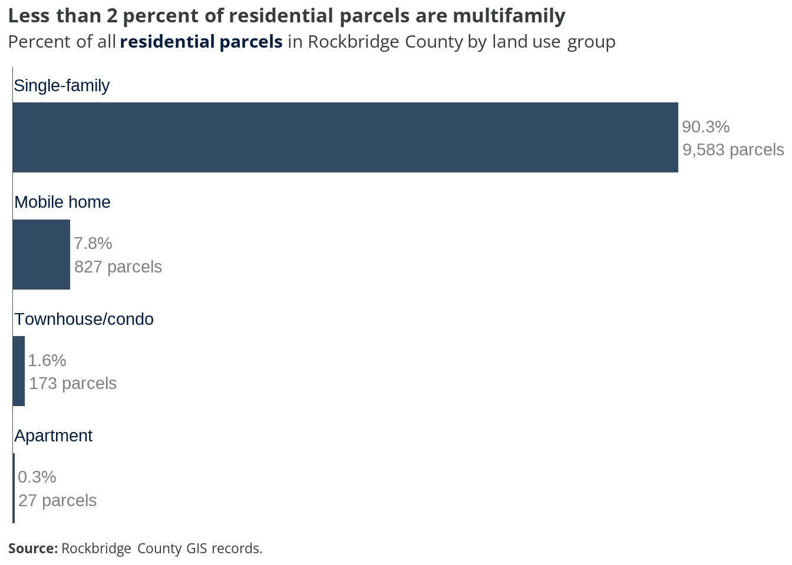
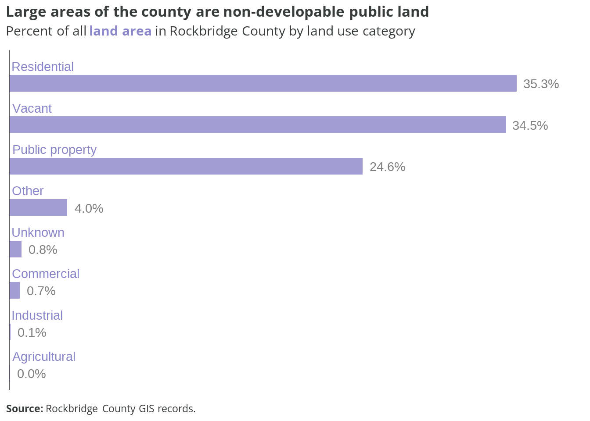
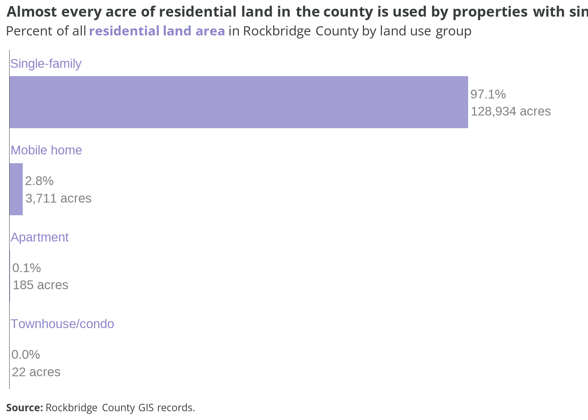

| Code | Description | Group | Category |
|---|---|---|---|
| 11 | Apartment | Apartment | Residential |
| 10 | Dwelling | Single-family | Residential |
| 21 | Single-wide MH | Mobile home | Residential |
| 22 | Double-wide MH | Mobile home | Residential |
| 24 | Triple-wide MH | Mobile home | Residential |
| 20 | Townhouse/condo | Townhouse/condo | Residential |
| 13 | Commercial | Commercial | Commercial |
| 26 | Fair value commercial | Commercial | Commercial |
| 90 | Utilities | Commercial | Commercial |
| 12 | Farm | Agricultural | Agricultural |
| 14 | Industrial | Industrial | Industrial |
| 30 | Delete | Delete | Delete |
| 16 | Fair value | Other | Other |
| 17 | Exempt | Other | Other |
| 0 | Unknown | Unknown | Unknown |
| 5 | Vacant exempt | Vacant | Vacant |
| 15 | Vacant land | Vacant | Vacant |
| 23 | Vacant land mobile home | Vacant | Vacant |
| 25 | Vacant land commercial | Vacant | Vacant |
1 Current land use
This section examines current residential land uses in Rockbridge County.
1.1 Categories
Parcels in the county are assigned one of 19 unique land use codes in the real property assessment data. To standardize these specific descriptions, we can assign new summary groups and categories, as shown in the table below. Residential land uses are highlighted.
Rockbridge County includes large tracts of state and federal land, such as the George Washington National Forest and Moore’s Creek State Forest. To account for these preserved areas, all parcels under public ownership were designated a new public property category by hand. The category is grouped according to which level of government owns the parcel.
The table below shows the revised land use categories and groups.
| Category | Group |
|---|---|
| Residential | Apartment |
| Residential | Mobile home |
| Residential | Single-family |
| Residential | Townhouse/condo |
| Public property | City property |
| Public property | County property |
| Public property | Federal land |
| Public property | State land |
| Commercial | Commercial |
| Agricultural | Agricultural |
| Industrial | Industrial |
| Other | Other |
| Unknown | Unknown |
| Vacant | Vacant |
This map shows general land use categories by parcel across Rockbridge County.
This map shows the specific residential use groups for current residential parcels only. All other uses are excluded.
1.2 Distribution
1.2.1 Parcels
There are a total of 22,777 individual parcels across Rockbridge County. Nearly all of them are either residential (46.6 percent) or vacant (45.3 percent). All other uses comprise less than 3 percent on their own.
Interpreting the lack of “agricultural” parcels
According to county assessment records, only two parcels were designated with the “farm” description, and thus assigned to the “agricultural” category. However, we know that many more parcels in the county are used for agricultural purposes, so it is reasonable to interpret that a significant share of the “residential” and “vacant” parcels include farming activities.
For more information on agricultural parcels in the county, see analysis of the A-1 and A-2 zoning districts in the next chapter.
Within just the 10,610 residential parcels, nearly all (90.3 percent) are single-family homes. Mobile homes on individual lots make up just under 8 percent; these include single-wides and double-wides. Only 173 parcels (1.6 percent) have townhomes or condos, and 27 parcels (0.3 percent) have apartments.

Single-family compared to multifamily parcels
For every parcel with a townhome, condo, or apartment building, there are another 48 parcels with single-family homes.
1.2.2 Area
Excluding Lexington and both towns, Rockbridge County is approximately 376,900 total acres. Residential and vacant parcels comprise the majority of this area, each accounting for about 35 percent of all land in the county.
Publicly-owned lands make up nearly 25 percent of the county’s area, but just 1.3 percent of all parcels. These large tracts—including national forests and wildlife management areas—are permanently off limits to new development.

The total area of residential parcels in the county is about 132,850 acres. Single-family home properties account for nearly every acre—over 97 percent—of that land. The remaining land is almost exclusively parcels with mobile homes (2.8 percent).
The few properties with apartments, townhomes, or condos make up just over 200 acres. This is less than 0.2 percent of all the residential land in Rockbridge County.

1.3 Lot sizes
The chart below shows the average and median lot sizes for the four different types of residential parcels found in the county.
At almost 14 acres, the average size of a single-family lot is about twice as large as the average apartment property (6.83 acres), despite the latter accommodating multiple homes on each lot. However, these values are right-skewed due to a small number of very large lots. Still, when using medians to account for this skew, the typical single-family lot is more than 60 percent larger than the typical lot with an apartment building.
The chart below shows the distribution of residential lot sizes by land use group.
Despite having the largest average sizes, there are many single-family lots one acre or less in size. Lots with mobile homes or townhomes/condos are clustered much more evenly around their median values.
1.4 Takeaways
Notable findings from this analysis of current land use in the county include:
- There are nearly an equal number of parcels used for homes as there are vacant parcels.
- Nine out of ten residential properties are detached single-family homes. Less than two percent are used for townhomes or apartments.
- Over half of all lots with single-family or mobile homes are bigger than 2 acres.
- Public property, primarily protected forests and conservation areas, makes up one-fourth of all land in the county.
The county’s current land use codes and descriptions could be improved for accuracy and legibility. For example:
- “Dwelling” can technically include many different types of units, but the county only assigns it to single-family detached homes.
- Townhomes, which would likely cover single-family attached units, are combined with condos. Condominium units are most often multifamily.
- Multiple codes are created to differentiate between “fair value” or “exempt” tax assessment designations. These assignments could be separated into a new standalone data field.
- The revised categories and groups in Table 1.2 are an example of a standardized alternative structure.
- In the long-term, the county may want to explore using the American Planning Association’s Land Based Classification Standards (LBCS).